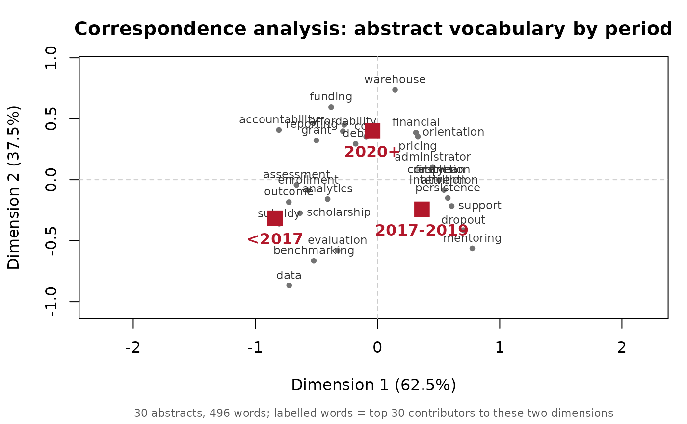

Correspondence analysis of abstract vocabulary across time periods
Source:R/abstract_ca.R
abstract_ca.RdTokenises abstracts, adds up word counts within time periods, and runs a correspondence analysis (CA) on the resulting words-by-periods table. The map shows which words are characteristic of which period, and how the periods relate to one another in vocabulary. Uses base R only (a singular value decomposition).
Usage
abstract_ca(
data,
text = "abstract",
year = "year",
breaks = NULL,
n_periods = 4,
min_words = 30,
min_doc_freq = 5,
min_word_length = 3,
stopwords = NULL,
singularize = TRUE,
n_dims = NULL,
min_count = 5,
n_distinctive = 10
)Arguments
- data
A data frame with one row per reference, such as the result of [bib_to_df()].
- text
Name of the column holding the abstracts.
- year
Name of the column holding the publication year. Text such as "2019" or "Spring 2019" is fine; the first 4-digit number is used.
- breaks
The first year of the 2nd, 3rd, ... period. `c(2005, 2013, 2019)` gives four periods: before 2005, 2005-2012, 2013-2018, and 2019 and later. If `NULL` (the default), the years are split into `n_periods` periods holding roughly equal numbers of abstracts.
- n_periods
Number of periods to use when `breaks` is `NULL`.
- min_words
Leave out abstracts shorter than this many words. Very short texts are mostly parsing leftovers and add noise.
- min_doc_freq
Keep a word only if it occurs in at least this many abstracts.
- min_word_length
Drop words shorter than this many letters.
- stopwords
Extra words to drop, in addition to [citelens_stopwords()]. Use this for words that are common to your whole field and so say nothing about change over time.
- singularize
Merge simple plurals (default `TRUE`).
- n_dims
Number of dimensions to return (at most the number of periods minus one). The default returns all of them.
- min_count
A word must be used at least this many times in a period to be listed as distinctive for it.
- n_distinctive
Number of distinctive words to list per period.
Value
An object of class `citelens_ca`, a list with:
- table
Words-by-periods count matrix that was analysed.
- periods
Period labels with the number of abstracts and words in each.
- eigen
Singular value, inertia and percent of inertia per dimension.
- terms
Data frame of word coordinates (`Dim1`, ...), `ctr1`, ... (contribution to each dimension, in percent), `quality` (share of the word's inertia captured by the dimensions kept) and `count`.
- period_coords
Period coordinates on each dimension.
- distinctive
For each period, the words most over-represented relative to the whole collection (`lift` = share in the period divided by share overall), among words used at least `min_count` times in that period.
- total_inertia, chisq, n
Total inertia (chi-square divided by `n`), the chi-square statistic, and the number of words analysed.
- n_docs
Number of abstracts analysed.
Details
Words are the rows and periods the columns, so with k periods there are at most k - 1 dimensions. The analysis is descriptive: words within one abstract are not independent, so the chi-square value is not a valid test and no p-value should be read from it. Because periods are ordered, the first two dimensions often trace a curved gradient (the "horseshoe" or Guttman effect) that reflects the time ordering rather than two separate themes. Words and periods are both plotted in principal coordinates, so only distances *within* the words or *within* the periods are directly interpretable.
Periods with no usable words are dropped, and at least two periods and 20 abstracts are needed.
Examples
f <- system.file("extdata", "sample_abstracts.bib", package = "citelens")
refs <- bib_to_df(f)
filler <- c("note", "time", "follow", "shape", "touch", "studied", "evidence",
"work", "attention", "discussion") # words from the synthetic sample
ca <- abstract_ca(refs, breaks = c(2017, 2020), stopwords = filler,
min_doc_freq = 3)
ca
#> Correspondence analysis of abstracts by period
#> 30 abstracts | 51 words | 496 word tokens
#>
#> period n_abstracts n_words
#> <2017 5 84
#> 2017-2019 13 216
#> 2020+ 12 196
#>
#> Inertia by dimension (total inertia = 0.2841):
#> dim singular_value inertia pct cum_pct
#> Dim1 0.4213 0.17750 62.5 62.5
#> Dim2 0.3265 0.10659 37.5 100.0
#>
#> Most distinctive words per period (lift):
#> <2017 data, benchmarking
#> 2017-2019 mentoring, dropout, support, persistence, attrition, completion
#> 2020+ warehouse, funding, accountability, reporting, affordability, cost
ca$distinctive
#> period term count lift
#> 1 <2017 data 5 3.28
#> 2 <2017 benchmarking 5 2.68
#> 3 2017-2019 mentoring 10 2.09
#> 4 2017-2019 dropout 10 1.91
#> 5 2017-2019 support 11 1.68
#> 6 2017-2019 persistence 7 1.61
#> 7 2017-2019 attrition 8 1.53
#> 8 2017-2019 completion 5 1.44
#> 9 2017-2019 firstyear 5 1.44
#> 10 2017-2019 loan 5 1.44
#> 11 2017-2019 retention 10 1.44
#> 12 2017-2019 institutional 7 1.34
#> 13 2020+ warehouse 6 1.90
#> 14 2020+ funding 7 1.77
#> 15 2020+ accountability 5 1.58
#> 16 2020+ reporting 10 1.58
#> 17 2020+ affordability 6 1.52
#> 18 2020+ cost 8 1.45
#> 19 2020+ financial 8 1.45
#> 20 2020+ pricing 5 1.41
#> 21 2020+ tuition 5 1.41
#> 22 2020+ dashboard 6 1.38
plot(ca)
